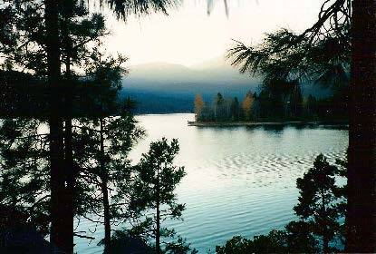

Motivations for researching and writing book.
Why did I invest a decade in researching and writing this particular book? The simple answer is out of dire necessity. As an ecological anthropologist for more than four decades I have engaged in researching, publishing, and teaching about the place of humans in nature, often in historical perspective. This work has been grounded in my university studies in geology and anthropology which encompassed courses in biology, ecology, and environmentalism as well.
On the basis of this background and experience I have regrettably come to the sad conclusion that secular approaches to reducing, if not resolving, environmental crises from the local to the global levels are vitally necessary, indeed indispensable, but have proven insufficient. Often they merely treat superficial symptoms rather than underlying causes. Usually they lack the big and long-term picture. This is not to diminish the diverse multitude of positive initiatives implemented since Earth Day on April 22, 1970, only to recognize that collectively they have been insufficient to really turn things around for the better.
A far more profound re-thinking, re-feeling, and re-visioning of the place of humans in nature is required, if the human species is to survive and flourish, and if the degradation of our home planet Earth is to be halted or at least markedly reduced and a greater degree of ecosanity restored. This far more profound concern and the ensuing action can only come from the application of the collective wisdom of humanity in the form of the rich multitude of diverse religious and spiritual traditions of the world. Fortunately, this is actually happening in a variety of ways and levels as this book demonstrates. The only question is whether this will be enough soon enough in order to avoid the impending global catastrophe for humanity and the biosphere. The trends and patterns of the extreme weather events of recent years throughout the world are a dire warning, and it is likely to get much worse in coming years and decades.
The movement I identify as spiritual ecology has foundations that are deep and substantial, its momentum is accelerating and cumulative, and its ramifications and implications are indeed revolutionary. This revolution does not have a single leader and it is not violent. My book is an attempt to sample the intellectual history of this quiet revolution and the far reaching practical consequences and significance of it. As the endorsements from prominent scholars and scientists demonstrate, my view is not by any means idiosyncratic.
There is much more than just idealistic hope here. However, only coming decades will reveal whether or not that hope is actually realized with any degree of success, assuming that our species survives that long and honors its self designation as Homo sapiens, the knowing species. I am very pessimistic in the short-term, but guardedly optimistic in the long-term, in light of more than two million years of human biological, cultural, and mental evolution.

Medicine Lake, Mount Shasta, California